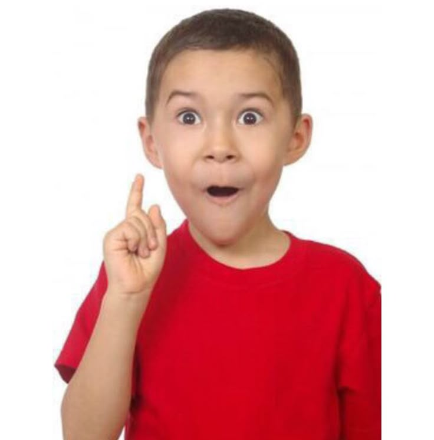

일윅에서 어레일과 유노상쟝를❗ 만나자~
현재까지 쏟아부은 노오오오력 : 0원
손잡이를 여러 번 클릭해서 돌려보세요 (계속 클릭하면 더 빨리 돌아가요)
기회 5번, 도전해보세요!
빨강
하늘
연두
보라
꽝
새 게임 시작 (기회 5회 초기화)
당첨을 축하합니다! 🎉
부시로의 대주주시네요!!👍
현재까지 쏟아부은 노오오오력 : 0원
초대장 수락
닫기
기회를 모두 사용했습니다
